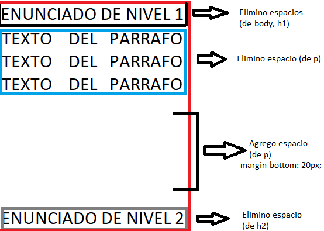
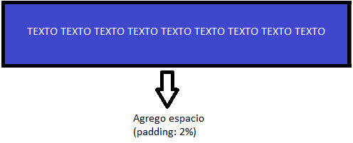

Hoja de estilos en cascada CSS
Tipos de implementaciones de CSS
CSS en línea (1er Prioridad)
Afecta a solo la etiqueta.
<h1 style="color: yellow;"> Diario ole </h1>CSS Interno (2da Prioridad)
Afecta a solo las etiquetas de mi archivo html en el cual se encuentra.
<head><style>
h1 {
color: yellow;
}
</style>
</head>
CSS Externo (3ra Prioridad)
Afecta a todos los archivos html que esten vinculas a el, por ello es la forma mas recomendada.
Debemos enlazar nuestra HTML con nuestro CSS (Hoja de estilo en cascada), la etiqueta se implementa dentro del HEAD, y es la siguiente:
Enlazar CSS<head>
<link rel="stylesheet" href="estilos.css">
</head>
Las siguientes etiquetas son un ejemplo a aplicar en la nuestro archivo estilos.css
h1 {background-color: red;
color: blue;
font-size: 32px;
text-align: center;
}
Reglas de estilo
Selector {propiedad:valor;}
h1 {
background-color: red;
}
Selector grupal
h1, p {
color: blue;
}
Selector descendente
h1 strong {
background-color: red;
}
Propiedad Margin
Nos permite agregar o eliminar espacios entre elementos.
De la siguiente forma elimino espacios:
body, h1, p, h2, {
margin: 0;
}
De la siguiente forma agrego espacios:
p {
margin-bottom: 20px;
}

La propiedad margin se compone de la siguiente manera:
- margin: 20px; → Aplica margin a sus 4 lados.
- margin-top: 20px; → Aplica margin hacia arriba.
- margin-bottom: 20px; → Aplica margin hacia abajo.
- margin-right: 20px; → Aplica margin hacia la derecha.
- margin-left: 20px; → Aplica margin hacia la izquierda.
Propiedad Padding
Nos permite agregar o eliminar espacios entre su contenedor y su contenido.
El valor en porcentaje hace referencia al total (100%) del tamaño de su contenedor.
header {
backgroud-color: blue;
padding: 2%;
color: white;
}

Propiedad Float
Aclaremos que Main en este caso es el 100% del ancho de mi contenedor padre (body), este contendra dos etiquetas
section y article del 50% de ancho.
La propiedad float left me va permitir ubicar la etiqueta a la izquierda de su contenedor padre y las demás etiquetas se ubicarán
a la derecha de la misma hasta que detenga el flotado con <div style="clear: both;"> </div>